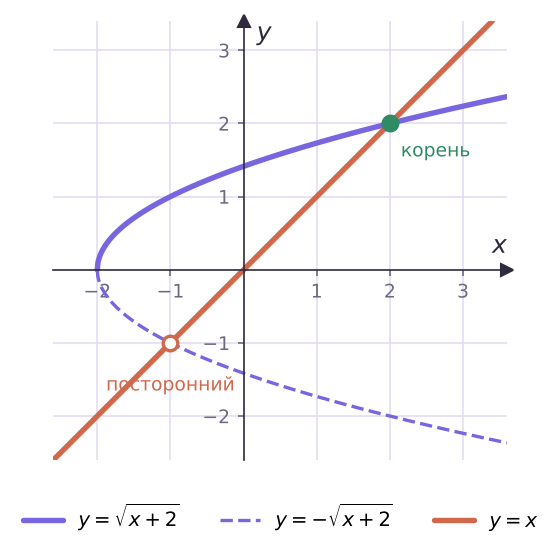

Теория
Равносильность и уравнения-следствия
Уравнение, в котором переменная стоит под знаком корня, называют иррациональным: √(x − 3) = 2, 3√(x² − 2) = 3√x и т. п. Решая уравнение, мы заменяем его более простым. Важно понимать, что происходит с корнями при каждой замене.
Область определения уравнения f(x) = g(x) — множество D(f) ∩ D(g). Уравнения равносильны, если множества их корней равны. Если множество корней первого уравнения — подмножество корней второго, второе называют следствием первого.
Корни уравнения-следствия, не являющиеся корнями исходного уравнения, называют посторонними. Переход к следствию допустим, но тогда проверка обязательна — это часть решения, а не «по желанию».
- Прибавить к обеим частям число или умножить их на число, не равное нулю, — равносильные преобразования (теоремы 14.1, 14.2).
- Теорема 14.3. Возведение обеих частей в нечётную степень даёт равносильное уравнение: функция t2k+1 обратима, из p³ = q³ следует p = q.
- Теорема 14.4. Возведение в чётную степень даёт уравнение-следствие: из p² = q² следует только |p| = |q|. Возможны посторонние корни.
Реши уравнение 5√(x² − 6) = 5√x.
Возведём в пятую степень — получим равносильное уравнение: x² − 6 = x, x² − x − 6 = 0, x = −2 или x = 3. Проверка не нужна.
Реши уравнение √(x + 2) = x.
Возведём в квадрат: x + 2 = x², x² − x − 2 = 0, x = 2 или x = −1.
Проверка: √4 = 2 — верно; √1 = 1 ≠ −1 — −1 посторонний корень. Ответ: 2.

Посторонний корень −1 из примера 2 принадлежит области определения уравнения (−1 + 2 ≥ 0). Поэтому проверки «по ОДЗ» недостаточно — нужно подставлять в исходное уравнение или следить за знаком правой части.
Равносильные системы — без проверки
Иногда проверка трудна: корень вроде (−2 + √61)/2 подставлять неудобно. Тогда пользуются равносильными переходами.
√f(x) = √g(x) ⇔ { f(x) = g(x), f(x) ≥ 0 } (вместо f(x) ≥ 0 можно взять g(x) ≥ 0 — какое проще).
√f(x) = g(x) ⇔ { f(x) = (g(x))², g(x) ≥ 0 }.
Почему в 14.6 условие g(x) ≥ 0, а условие f(x) ≥ 0 не нужно? Арифметический корень неотрицателен, поэтому правая часть обязана быть ≥ 0. А f(x) = (g(x))² ≥ 0 выполняется автоматически.
Если на множестве M обе части уравнения неотрицательны, то на M уравнения f(x) = g(x) и (f(x))2k = (g(x))2k равносильны.
Реши уравнение √(x² − 4x) = √(x − 4).
Равносильно системе x² − 4x = x − 4, x − 4 ≥ 0. Из уравнения x² − 5x + 4 = 0: x = 1 или x = 4. Условию x ≥ 4 удовлетворяет только x = 4.
Реши уравнение √(x + 5) = x − 1.
Система: x + 5 = (x − 1)², x ≥ 1. Уравнение: x² − 3x − 4 = 0, x = 4 или x = −1. Условию x ≥ 1 отвечает x = 4.
Два корня: уединяем и возводим дважды
Реши уравнение √(x + 3) + √(x − 2) = 5.
Область определения: x ≥ 2. Обе части неотрицательны, по теореме 14.7 возводим в квадрат: 2x + 1 + 2√((x + 3)(x − 2)) = 25, то есть √((x + 3)(x − 2)) = 12 − x.
Правая часть должна быть ≥ 0: x ≤ 12. Снова в квадрат: x² + x − 6 = 144 − 24x + x², 25x = 150, x = 6 (2 ≤ 6 ≤ 12). Проверка: 3 + 2 = 5.
Реши уравнение √(2x − 3) − √(x − 2) = 1.
x ≥ 2. Уединим корень: √(2x − 3) = 1 + √(x − 2) — обе части неотрицательны. Квадрат: 2x − 3 = 1 + x − 2 + 2√(x − 2), откуда x − 2 = 2√(x − 2). Пусть t = √(x − 2) ≥ 0: t² = 2t, t = 0 или t = 2, x = 2 или x = 6.
Проверка: x = 2: 1 − 0 = 1; x = 6: 3 − 2 = 1. Оба корня подходят.
Перед возведением в квадрат уединяй корень так, чтобы обе части были неотрицательны. Если оставить разность корней слева, квадрат может «склеить» уравнение с уравнением √(2x − 3) − √(x − 2) = −1 и дать лишние корни.
Задачи урока
Реши в тетради. Ответы разберём на занятии.
Из учебника
- № 14.1, 14.2 — Уравнения вида ⁿ√f(x) = ⁿ√g(x).
- № 14.3 — Уравнения вида √f(x) = g(x).
- № 14.5 — Произведение, содержащее корень.
- № 14.8 — Разность двух корней.
- № 14.10 — Сумма двух корней.
Тест к уроку
Домашнее задание
№ 14.2, 14.4, 14.9, 14.11 из учебника письменно. В каждом уравнении указать, какой переход сделан: равносильный или к следствию (и где выполнена проверка).